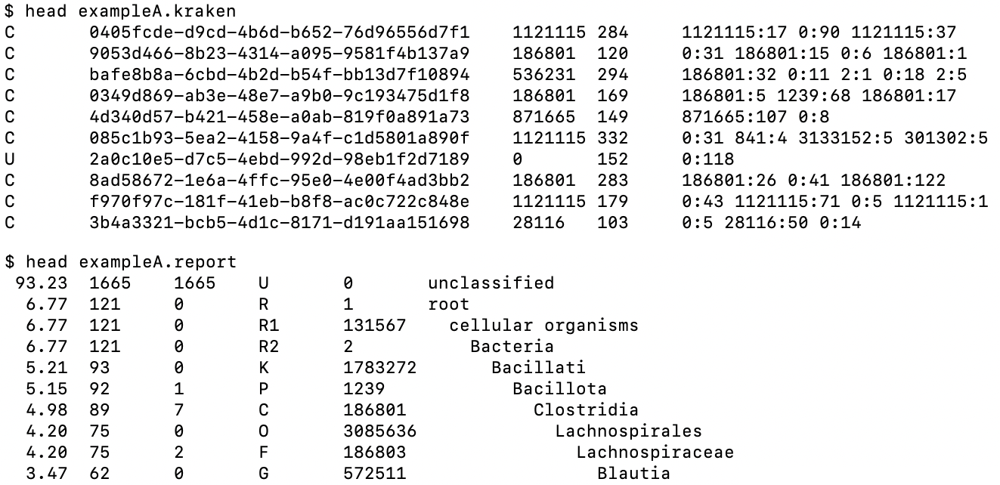
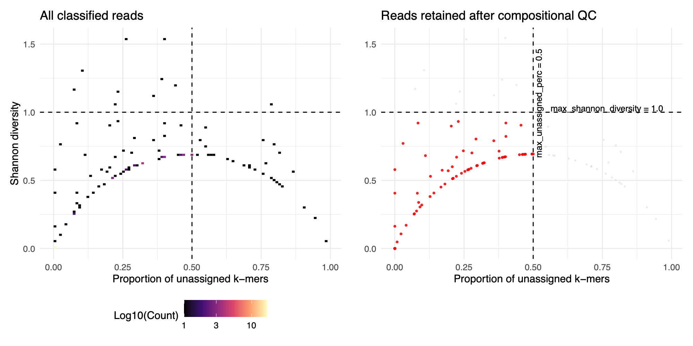

BASEN
BASEN (Base-level Abundance estimation with Species-assigned Evidence using Nanopore) is an R package for genome-size-aware, species-level abundance estimation from Kraken2 long-read classification outputs. It was developed for long-read metagenomic workflows in which conventional count-based summaries are difficult to interpret because of variation in read length, sequencing depth, taxonomic assignment characteristics, and reference genome size.
BASEN provides two integrated analytical components. First, it estimates species-level abundance by aggregating species-assigned k-mer evidence from Kraken2 read-level output, normalizing that evidence by effective reference genome length, and scaling the normalized values within each sample to produce relative abundance estimates. Second, it provides a read-level compositional quality-control workflow based on assigned and unassigned k-mer profiles, enabling identification of ambiguous or low-information reads prior to abundance estimation.
This documentation summarizes the BASEN workflow and its principal functions.
Installation
BASEN is implemented in R and is distributed from GitHub.
Install the package with:
# install.packages("devtools")
devtools::install_github("Snyder-Institute/basen")
The package currently depends on the following core R packages:
data.tabledplyrggplot2(for visualization of read-level QC metrics)
After installation, load BASEN in the usual way:
library(basen)
For abundance estimation, BASEN expects Kraken2-generated *.kraken and *.report files together with a genome statistics table containing TaxIDs and reference genome sizes. Genome statistics can be derived from reference FASTA files using the helper script located at:
inst/scripts/get_genome_length_from_fasta.sh
An example command is:
sh inst/scripts/get_genome_length_from_fasta.sh *.fa > genome_stats.txt
Only the first two columns of the resulting table are required by BASEN:
- TaxID
- Genome size in base pairs
Workflow
The BASEN workflow consists of four conceptual stages:
- Kraken2 classification
- This step is external to BASEN. Users must run Kraken2 independently to generate the
*.krakenand*.reportfiles required for downstream BASEN analysis.
- This step is external to BASEN. Users must run Kraken2 independently to generate the
- Read-level compositional quality control
- Species-level abundance estimation
- Optional cross-sample normalization for downstream analysis
A typical workflow begins with Kraken2 classification against a custom reference database. BASEN then uses the resulting read-level and report-level outputs to quantify taxonomic signal at the species level.
Required inputs
BASEN requires:
- Kraken2 read-level output files (
*.kraken) - Kraken2 report files (
*.report) - A genome statistics file containing TaxIDs and genome sizes
These inputs are used in different ways:
*.krakenfiles provide the per-read k-mer assignment string from which BASEN extracts species-assigned evidence*.reportfiles define the taxa available at species rank for downstream quantification- The genome statistics table provides the reference lengths needed to normalize aggregated k-mer evidence
Example snapshots of exampleA.kraken and exampleA.report are shown below to illustrate the expected input structure.

Conceptual framework
For each species, BASEN aggregates the number of species-assigned k-mers across classified reads to obtain a species-level evidence quantity. This aggregated signal is then normalized by effective reference genome length to derive a coverage proxy, and the coverage proxies are scaled within each sample to obtain relative abundance.
In parallel, BASEN can compute read-level compositional metrics, including total k-mers, assigned k-mers, unassigned k-mers, assigned and unassigned proportions, and Shannon diversity of taxonomic k-mer assignments. These quantities support evaluation of assignment coherence before abundance estimation.
Core functions
The principal BASEN functions are:
profile_kmer_composition(): Computes read-level k-mer composition metrics from a Kraken2*.krakenfile.filter_low_info_reads(): Applies empirical thresholds to read-level QC metrics and returns retained read IDs.plot_kmer_qc(): Visualizes read-level QC profiles to support threshold selection.kraken_relative_abundance(): Computes genome-size-aware species-level abundance estimates from Kraken2 outputs.collect_basen_metrics(): Aggregates per-sample BASEN outputs across files.calc_size_factors(): Calculates sample-specific size factors from coverage-proxy matrices for downstream cross-sample normalization.
Read-level QC
Read-level compositional quality control is designed to identify classified reads that carry weak, diffuse, or ambiguous taxonomic evidence. In long-read metagenomic data, nominally classified reads may still contain substantial unassigned content or highly mixed taxonomic k-mer profiles. BASEN therefore provides functions to characterize the composition of each classified read before abundance is estimated.
profile_kmer_composition()
This function parses a single Kraken2 *.kraken file and computes the following metrics for each classified read:
total_kmers: Total number of k-mers in the read, calculated from read length and the Kraken2 k-mer length.assigned_kmers: Number of k-mers assigned to the read’s reported TaxID.unassigned_kmers: Number of k-mers with TaxID0.assigned_perc: Proportion of total k-mers assigned to the reported TaxID.unassigned_perc: Proportion of total k-mers that remain unassigned.kmers_diversity: Shannon diversity of taxonomic k-mer assignments within the read.
These metrics provide a compact summary of read-level assignment quality. Reads with high unassigned proportion or high assignment diversity are more likely to represent low-information or compositionally ambiguous evidence.
A typical call is:
qc_metrics <- profile_kmer_composition(
kraken_file = "sample1.kraken",
k_mer_length = 35
)
plot_kmer_qc()
This function visualizes the relationship between unassigned k-mer proportion and Shannon diversity using a two-dimensional binned plot. It is intended as a diagnostic tool for identifying the empirical region occupied by high-confidence versus low-confidence reads.
Typical usage:
qc_plot <- plot_kmer_qc(qc_metrics)
print(qc_plot)
In general, reads with lower unassigned_perc and lower kmers_diversity show more coherent taxonomic evidence. Reads occupying the opposite region of the plot may warrant exclusion.
filter_low_info_reads()
This function applies user-defined thresholds to the read-level QC metrics and returns retained read IDs. Filtering is based on two parameters:
max_unassigned_perc: The maximum allowable proportion of unassigned k-mers within a read. Reads withunassigned_percvalues above this threshold are excluded.max_shannon_diversity: The maximum allowable Shannon diversity of taxonomic k-mer assignments within a read. Reads withkmers_diversityvalues above this threshold are excluded because they exhibit more diffuse or ambiguous assignment profiles.
A read is retained only if it satisfies both thresholds. For a single sample, the function returns a character vector of read IDs. If a sample_id column is present in the input table, the function returns a named list of retained read IDs by sample.
Example:
hq_reads <- filter_low_info_reads(
kmer_profile = qc_metrics,
max_unassigned_perc = 0.5,
max_shannon_diversity = 1.0
)
This QC workflow is optional but recommended, particularly for long-read datasets in which read-level assignment quality is heterogeneous.
An example two-panel figure is shown below: the left panel displays the full read-level QC profile generated by plot_kmer_qc(), and the right panel highlights the subset of reads retained by filter_low_info_reads() under the specified thresholds. Together, these panels illustrate how BASEN uses empirical thresholds on unassigned k-mer proportion and Shannon diversity to identify high-confidence reads for downstream abundance estimation.

Abundance
Species-level abundance estimation is the core BASEN procedure.
kraken_relative_abundance()
This function derives genome-size-aware species-level abundance estimates directly from Kraken2 classification outputs. It accepts directories containing *.kraken and *.report files, together with a genome statistics file, and returns a combined long-format table of abundance metrics across all processed samples.
A minimal call is:
ra_dt <- kraken_relative_abundance(
report_dir = "path/to/reports",
kraken_dir = "path/to/kraken",
genome_stats_file = "path/to/genome_stats.txt"
)
If high-confidence read IDs have been obtained from the QC workflow, they can be supplied through the read_filter argument so that only retained reads contribute to abundance estimation.
Example:
ra_dt <- kraken_relative_abundance(
report_dir = "path/to/reports",
kraken_dir = "path/to/kraken",
genome_stats_file = "path/to/genome_stats.txt",
read_filter = hq_reads
)
Analytical steps
For each sample, BASEN performs the following operations:
- Reads the Kraken2 report and identifies taxa annotated at species rank.
- Reads the Kraken2
*.krakenfile and retains classified reads. - Extracts the number of k-mers assigned to each focal species from the read-level assignment strings.
- Aggregates species-assigned k-mer evidence across all retained reads.
- Records the number of reads assigned to each species.
- Normalizes the aggregated species-assigned signal by effective reference genome length.
- Scales the normalized values within each sample to obtain relative abundance.
Output columns
The resulting table typically includes:
sample_id: Sample identifier.name: Species name.taxid: Species TaxID.genome_size_bp: Effective genome size used for normalization.bases_assigned: Total species-assigned k-mer evidence aggregated across reads.reads_assigned: Number of reads contributing to the species.coverage_proxy: Genome-length-normalized signal.relative_abundance: Within-sample species-level relative abundance.
Interpretation
The relative_abundance column is the primary BASEN abundance output. It represents the species-level relative abundance within each sample after aggregation of species-assigned k-mer evidence and normalization by effective genome length.
The coverage_proxy column is an intermediate normalized signal that remains useful for downstream analysis. It should not be interpreted as relative abundance, but rather as a genome-length-adjusted abundance measure that can be used for comparative analyses across samples.
collect_basen_metrics()
When BASEN outputs have been written as per-sample *.basen files, collect_basen_metrics() can be used to aggregate selected metrics across samples.
For example:
ra_combined <- collect_basen_metrics(
output_folder = "basen_results",
metric = "relative_abundance"
)
or
cp_combined <- collect_basen_metrics(
output_folder = "basen_results",
metric = "coverage_proxy"
)
This function is useful when BASEN has been run in a parallelized or file-based workflow.
Normalized matrix
BASEN also provides an optional downstream normalization utility for cross-sample analysis based on coverage_proxy values.
calc_size_factors()
This function computes sample-specific size factors from a taxon-by-sample coverage-proxy matrix. The method follows a median-ratio style normalization strategy in which taxa with strictly positive values across samples are used to define a reference, and sample-level scaling factors are estimated from ratios relative to that reference.
Example:
sf <- calc_size_factors(
x = coverage_matrix,
method = "median"
)
The resulting size factors can be applied to the coverage-proxy matrix to obtain a normalized matrix for downstream analyses:
normalized_mat <- sweep(coverage_matrix, 2, sf, "/")
Intended use
This normalized matrix is not the primary BASEN abundance output. Instead, it is an optional downstream object that may be useful for:
- Ordination
- PCoA
- Clustering
- Heatmaps
- Other comparative analyses across samples
In contrast, the primary BASEN abundance result remains the relative_abundance column returned by kraken_relative_abundance().
Practical distinction
In brief:
relative_abundanceis the within-sample BASEN abundance estimate- normalized matrices derived from
coverage_proxyare optional downstream objects for cross-sample analysis
Notes
BASEN currently implements species-level abundance estimation and read-level compositional QC. Genus-level summarization is planned, but taxonomy-aware roll-up across lower-rank assignments is not yet implemented.
For a complete workflow example, including data preparation, QC, abundance estimation, and optional downstream normalization, refer to the package vignette.